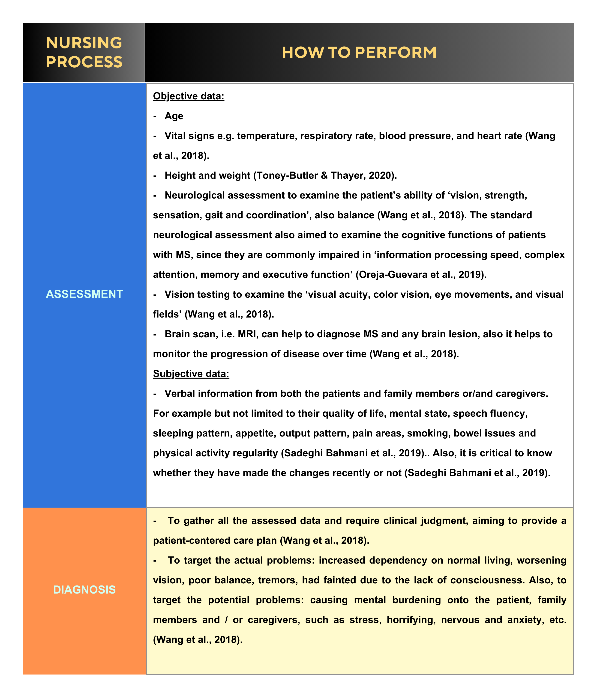
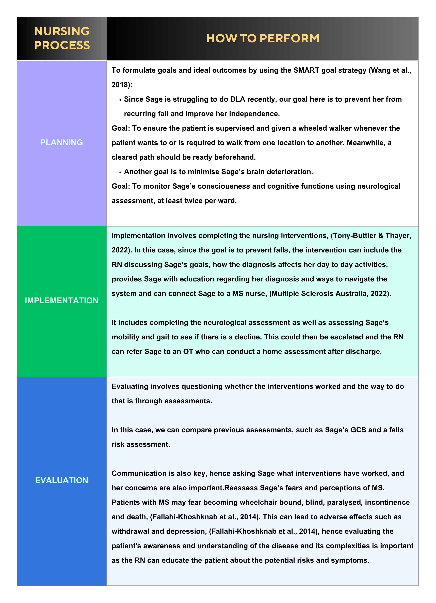
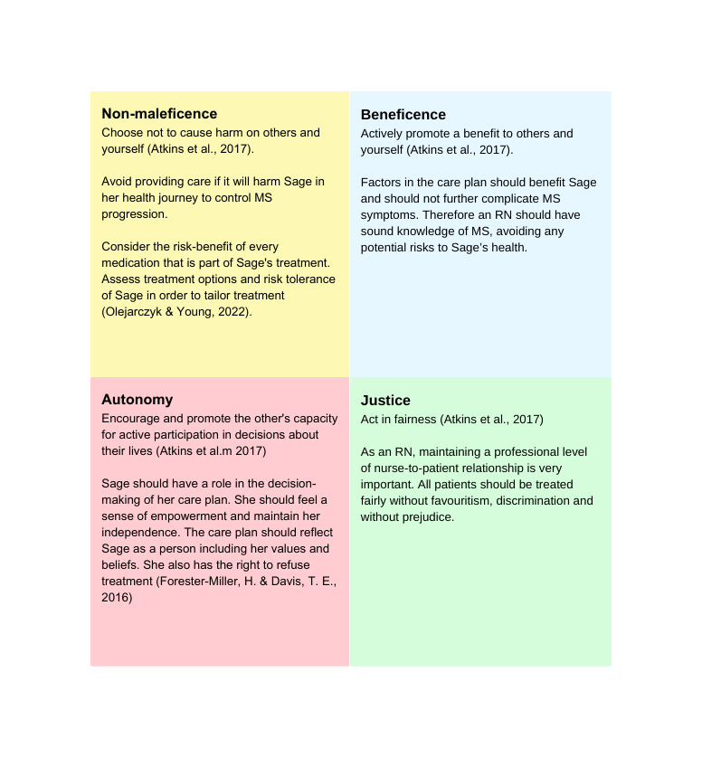

Introduction
Meet Sage
Sage is 28 years old and was diagnosed with MS in February 2022. Initially, about eight months ago, Sage started experiencing tiredness, muscle weakness and tremors (specially when lifting light weight objects), occasional blurred vision and short-term memory problems. The symptoms occurred infrequently, which caused Sage to not seek help for some time. However, Sage experienced an exacerbation that resulted in paralysis of her right arm and partial paralysis of her left arm.
After relevant assessments to discard other possibilities and a magnetic resonance imaging (MRI) scan, Sage receives her diagnostic from the medical team and also intravenous treatment (steroids). She was referred to an inpatient rehabilitation hospital for treatment of the paralysis. Upon discharge, Sage was able to hold a glass with her hands but still unable to lift it.
Sage is still dealing with the fact that she was diagnosed with MS and all the implications of this diagnose to her life. She lives with her mother and sister, who are also affected by the recent events but willing to support her. Sage is very confused with all the medical terms she suddenly have to become familiar with, and is unsure about what the next steps are regarding her treatment. She is worried about not being able to lift her arms again, and comes to you for advice.In terms of frameworks (theoretical, practical, philosophical, and regulatory) within nursing practice at a professional and individual level:
What should you consider in assisting Sage with her decisions regarding her care plan?
The following content and literature review will aim at answering this question based on existing research on the topic.
Literature Review
Theoretical Framework
Due to the complexity of the disease, MS nursing involves many aspects to consider and reconsider over time depending on patient’s needs, changing conditions, responses and treatment options. The registered nurse will be in a better position to assist Sage by making use of some underlying principles regarding MS nursing practice, as discussed by Halper & Harris (2012, p.12) and shown on Table 1:
Table 1
Universal Tasks Associated with MS Nursing
.png)
Note. This Table was designed by Group 15 Foundations of Nursing 2023 using Canva(2013),(https://www.canva.com/). Copyright 2023 by Canva. It combines information regarding the universal tasks within MS nursing practice discussed in Nursing Practice in Multiple Sclerosis: a Core Curriculum(p.12), Halper and Harris, 2012, Springer Publishing Company, Incorporated. Copyright 2012 by Springer Publishing Company, Incorporated.
In addition, MS nursing can be organised as domains of practice, which consist of areas of nursing practice where nurses are responsible when assisting a patient with MS and their support network. The domains of practice are also discussed in Burke et al. (2011), Halper (2012), and at the Professional and Practice Standards for Multiple Sclerosis Nurses organised by Multiple Sclerosis Nurses Australasia Inc (MSNA)(2016). They are summarised in Figure 1.
Figure 1
Domains of Practice - MS Nursing
.png)
Note. This Figure was designed by Group 15 Foundations of Nursing 2023 using Canva(2013),(https://www.canva.com/). Copyright 2023 by Canva. It combines information regarding the MS nursing domains of practice discussed in: Nursing Practice in Multiple Sclerosis: a Core Curriculum(p.12), Halper and Harris, 2012, Springer Publishing Company, Incorporated. Copyright 2012 by Springer Publishing Company, Incorporated. "The Evolving Role of the Multiple Sclerosis Nurse." by Burke et al., 2011, International Journal of MS Care, 13(3), 105–112. (105–112. https://doi.org/10.7224/1537-2073-13.3.105) Copyright 2011 by International Journal of MS Care.; Professional and Practice Standards for Multiple Sclerosis Nurses, by Multiple Sclerosis Nurses Australasia Inc (MSNA), 2016 (https://msnainc.org.au/wp-content/uploads/2019/08/Professional-and-Practise-Standards-for-MS-Nurses-PPSMSNA_2016.pdf). Copyright 2016 by MSNA Inc.
Practical Framework
Nursing process is the “systematic guide” for nursing to provide person-centred care to all patients. It includes 5 steps: Assessment, diagnosis, planning, implementation, and evaluation (Toney-Butler & Thayer, 2020). Table 3 and 4 organise information regarding the nursing process for Sage.
Table 3
Nursing Process
Note. This Table was designed by Group 15 Foundations of Nursing 2023 using Canva(2013),(https://www.canva.com/). Copyright 2023 by Canva.
Table 4
Nursing Process (continuation from Table 3)
Note. This Table was designed by Group 15 Foundations of Nursing 2023 using Canva(2013),(https://www.canva.com/). Copyright 2023 by Canva.
Philosophical Framework
Often, registered nurses make decisions that reflect their values and beliefs. However, as part of the nursing process and the domains of practice described above, nurses should evaluate whether their moral principles are in line with their duty of care and standard of care set by the Nursing and Midwifery Board of Australia (NMBA). Among many other possibilities of organisation of moral principles within nursing practice, the four principles of bioethics - non-maleficence, beneficence, respect for autonomy, and justice - are considered a relevant guide to registered nurses (Atkins et al., 2017). Figure 2 summarises the four principles of bioethics being applied to Sage by a registered nurse.
Figure 2
Four Principles of Bioethics applied to Sage
Note. This Figure was designed by Group 15 Foundations of Nursing 2023 using Canva(2013),(https://www.canva.com/). Copyright 2023 by Canva.
Regulatory Framework
Prior to implementing a nursing intervention for Sage, the registered nurse(RN) must be qualified and deemed fit to enter the profession. This is where the regulatory frameworks are important. An RN must renew their Australian Health Practitioner Regulation Agency (AHPRA) registration yearly, regularly participate in professional development and criminal checks, have up-to-date practical experience, and have English skills. If these factors are fulfilled, then nurses are qualified and deemed fit for the title of a registered nurse (Atkins et al., 2020). In order to provide a safe nursing practice, the code of conduct must be upheld. Ultimately, by adhering to these codes, the RN can safely provide nursing care for Sage throughout her treatment. Figure 3 shows the four domains within the Code(s) of Conduct set by the NMBA (Purdue & Kerr, 2020), the domains are based on seven principles of conduct expected from nurses and in accordance with the National Law.
Figure 3
Code(s) of Conduct for Nurses and Midwifes

Note. This Figure was designed by Group 15 Foundations of Nursing 2023 using Canva(2013),(https://www.canva.com/). Copyright 2023 by Canva. It combines information regarding the Code(s) of Conduct for Nurses and Midwives discussed in: Nursing and Midwifery Board of Australia [NMBA] - Code(s) of Conduct, by Purdue and Kerr, 2020 (https://www.nswnma.asn.au/wp-content/uploads/2020/05/NMBA_Codes-of-Conduct_PPT.pdf). Copyright 2020 by NSW Nurses and Midwives' Association.
Recommendations
Registered Nurses are directly involved in counselling patients and their families about possible treatment options and course of action. This means that nurses are at the forefront of ensuring treatment adherence to patients living with MS by managing or monitoring side effects and discussing treatment outcomes. A study showed that 40% of patients living with MS were non adherent to treatment involving parenteral administration of disease modifying drugs (DMDs) (Treadaway et al., 2009, as cited in Burke et al., 2011), and other studies confirm this finding with 17% to 46% of MS patients not adhering to prescribed treatments (Tremlett & Over, 2003, Portaccio et al., 2008, O’Rourke & Hutchinson, 2005, Rio et al., 2005, as cited in Burke et al., 2011). The scope of treatment options for MS has increased, such as the introduction of oral therapies, which are perceived as being more friendly than parenteral, and therapies with annual dosing schedules (Burke et al., 2011). As a result, patient adherence might increase even though the changes in treatment also have the potential to pose new challenges to patients and nurses.
Adherence to treatment is an important part of the management of MS. Some strategies to encourage adherence to treatment and improve long term outcomes are listed below:
- Develop a therapeutic relationship with the patient and their support network
- Effectively involve other members of the health care team in the caring plan of patients
- Education: encourage patient’s self-determination and assist them to manage their expectations. A study shows that 57% of patients who decided not to proceed with treatment had misguided expectations (Mohr et al., 1996).
- During treatment administration: address patient’s concerns, explain possible side-effects and work on relaxation techniques (Burke et al., 2011).
The need for highly specialised nurses has increased due to the expansion of treatment options coupled with higher pressure on healthcare systems (Burke et al., 2011). Unfortunately, 31.5% did not have access to MS Nurse care (1 nurse/ 286 patients), and 17.8% were unaware of the existence of an MS Nurse (Multiple Sclerosis Australia, 2022). This results in deficient care, which contributes to poor health outcomes (faster disease progression, severity of symptoms, depression).
To optimise the situation, raise the awareness of MS nurses’ value and services provided by them to patients. Increase their access by expanding to Telehealth services and make this available through Medicare, and increase their numbers by secure funding (Multiple Sclerosis Australia, 2022).
Conclusion
This poster presentation investigates and discuss the case of Ms. Sage - active young women who has been diagnosed with Multiple Sclerosis (MS) - based on different frameworks within nursing practice. Treatment of MS is multifactorial including patient and family education, counselling, physical therapy, rehabilitation, and pharmacotherapy (Maloni & Hillman, 2015). The registered nurse must inspire confidence in patients by allowing them to take responsibility for their MS self-management. This can be achieved by involving other members of the health care team in the caring plan of the patient and encourage patient’s self- determination. Nurses have an unique capacity to develop, manage, and sustain care for people living with MS throughout the disease's progression and understand the objective of providing access to efficient, high-quality care. The different frameworks available for nurses can assist in organising and keeping the nursing practice consistent. As a result, nurses are able to evaluate the outcome of their interventions, and adopt necessary changes throughout the course of the long and sometimes unpredictable MS treatment. The broader implication of this case suggests the benefit of multi-model approach to provide adequate care for a patient with MS.
References
Alshamrani, R., Althbiti, A., Alshamrani, Y., Alkomah, F., & Ma, X. (2020). Model-Driven Decision Making in Multiple Sclerosis Research: Existing Works and Latest Trends.Patterns,1(8), 100121. https://doi.org/10.1016/j.patter.2020.100121
Atkins, K., de Lacey, S., Ripperger, R. (2020).Ethics and Law for Australian Nurses.Cambridge University Press.
Burke, T., Dishon, S., McEwan, L., & Smrtka, J. (2011). The Evolving Role of the Multiple Sclerosis Nurse.International Journal of MS Care, 13(3), 105–112.
Halper, J., & Harris, C. (2012).Nursing practice in multiple sclerosis : A core curriculum.Springer Publishing Company, Incorporated.
Halper, J., & Holland, N. (2011).Comprehensive nursing care in multiple sclerosis : Third edition.Springer Publishing Company, Incorporated.
Fallahi-Khoshknab, M., Ghafari, S., Nourozi, K., & Mohammadi, E. (2014).Confronting the Diagnosis of Multiple Sclerosis. A Qualitative Study of Patient Experiences.Journal of Nursing Research,
22(4), 275-282. https://doi.org/10.1097/jnr.0000000000000058
Forester-Miller, H. & Davis, T. E. (2016).ractitioner’s guide to ethical decision making. American Counseling Association.
https://www.counseling.org/docs/default-source/ethics/practioner-39-s-guide-to-ethical-decision-making.pdf
Maloni, H., & Hillman, L. (2015). Multidisciplinary management of a patient with multiple sclerosis: Part 2. Nurses’ perspective.Federal Practitioner: For the Health Care Professionals of the
VA, DoD, and PHS,32(Suppl 3), 17S-19S.
Mohr, D. C., Goodkin, D. E., Gatto, N., Neilley, L. K., Likosky, W., Griffin, C., & Stiebling, B. (1996). Therapeutic expectations of patients with multiple sclerosis upon initiating interferon beta-1b:
Relationship to adherence to treatment. Multiple Sclerosis,2(5), 222–226. https://doi.org/10.1177/135245859600200502
Multiple Sclerosis Australia (2022).MS Nurse Care in Australia. Patterns of access and impact on health outcomes.Menzies Institute for Medical Research University of Tasmania.
https://www.msaustralia.org.au/wp-content/uploads/2022/04/msa_ms-nurses-report_web.pdf
Multiple Sclerosis Nurses Australasia. (2016).Professional and Practice Standards for Multiple Sclerosis Nurses.Multiple Sclerosis Nurses Australasia Inc.
https://msnainc.org.au/wp-content/uploads/2019/08/Professional-and-Practise-Standards-for-MS-Nurses-PPSMSNA_2016.pdf
Olejarczyk, J. P. & Young, M. (2022). Patient Rights And Ethics. National Library of Medicine: National Center for Biotechnology Information.
https://www.ncbi.nlm.nih.gov/books/NBK538279/
Oreja-Guevara, C., Ayuso Blanco, T., Brieva Ruiz, L., Hernández Pérez, M. Á., Meca-Lallana, V., & Ramió-Torrentà, L. (2019). Cognitive Dysfunctions and Assessments in Multiple
Sclerosis Frontiers in Neurology, 10. https://doi.org/10.3389/fneur.2019.00581
Sadeghi Bahmani, D., Kesselring, J., Papadimitriou, M., Bansi, J., Pühse, U., Gerber, M., Shaygannejad, V., Holsboer-Trachsler, E., & Brand, S. (2019). In Patients With Multiple Sclerosis, Both
Objective and Subjective Sleep, Depression, Fatigue, and Paresthesia Improved After 3 Weeks of Regular Exercise. Frontiers in Psychiatry, 10.
https://doi.org/10.3389/fpsyt.2019.00265
Singer, J. (2016). NeuroDiversity: The Birth of an Idea. Judy Singer
Toney-Butler, T. J., & Thayer, J. M. (2020, July 10).Nursing Process. PubMed; StatPearls Publishing.
https://www.ncbi.nlm.nih.gov/books/NBK499937#:~:text=The%20nursing%20process%20functions%20as
Wang, C., Ruiz, A., & Mao-Draayer, Y. (2018). Assessment and Treatment Strategies for a Multiple Sclerosis Relapse. Journal of Immunology and Clinical Research, 5(1), 1032.
https://www.ncbi.nlm.nih.gov/pmc/articles/PMC6223639/#:~:text=The%20physical%20exam%20is%20the
Zawada, W. M., PhD, & Campanella, J. J., PhD. (2022). Multiple sclerosis.Magill’s Medical Guide (Online Edition). https://discovery.ebsco.com/c/xppotz/viewer/html/33ftqyvkzv